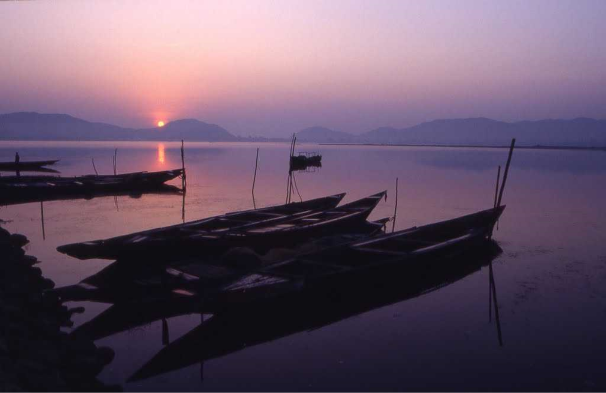
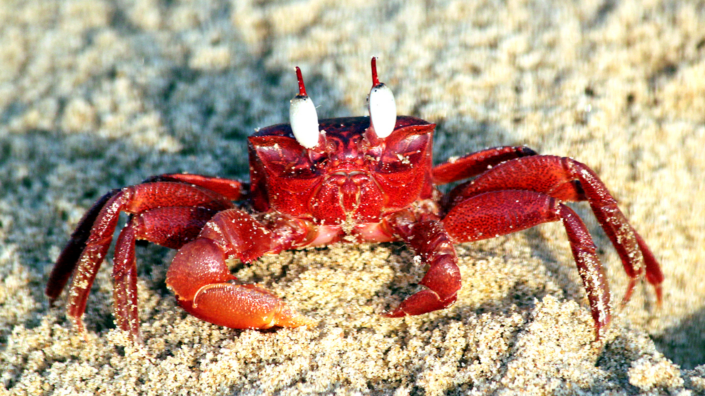

Our Project

We intend to make chilika lake plastic free by educating the youth about the adverse effects of plastic and how it can curb the balance of the natural ecosystem of the Chilika lake. We believe in creating awareness about the why's starting right from the grassroot level, and further address the how's with the cooperation of the local community and the governing bodies.
It is rightly said that education is the most powerful weapon. Our main motive is to reduce plastic usage by educating and engaging with schools, colleges and the local communities and creating awareness to bring about the desired change.
The Gambhari Village - Our First Milestone
“Gambhari”, our pilot project, is situated near Satapara & Chilika lake. The panchayat Gambhari comprises of 4 villages and an approximate population of 6000 people.
Gambhari is panchayat in Puri district comprising of 4 villages and an approximate population of 6000 people. Majority of the villagers of Gambhari are dependent on the aquatic resources of Chilika, particularly prawn and fish, for their survival. Prawn cultivation is the major source of income for the village. Besides prawn and crabs, “Khainga”, “dangala”, “vetki”, “khurenti” and “Shahala” are a few of the daily catches of the fishermen community of this village. Living in such close proximity with the Chilika lake, Gambhari is a village which has witnessed the adverse effects of pollution on the lagoon at a very personal level.
“When I was kid, the lake was pure and clean, but now I see polythene bags floating everywhere”, says Kailash, a junior ranger from Gambhari.
Due to many reasons like dumping of waste, irresponsible consumption of aquatic resources, spread of invasive species, loss of biodiversity, the Chilika lake is dying which would cause deadly affects on the lives of hundreds of villages like gambhari. The question is, “How fast can we stop it?”
Chilika shelters various endangered and rare species of insects, birds and animals including the famous Irrawaddy Dolphins that can only be found in chilika and are listed under IUCN as an endangered species. An extremely productive ecosystem and fishery ground, chilika provides as a source of income to more than 2 lakh local fishermen. Counted as a biodiversity hotspot in the world it was declared a ‘Ramsar Site’ (a wetland of international importance) by UNESCO for its rich biodiversity since 1981 and is a major tourist attraction for thousands of birdwatchers and nature lovers every year.
The Local Junior Rangers
We have created an enthusiastic team comprising of school kids from Gambhari called "Chilika Junior Rangers".
 The Chilika Junior Rangers will play a vital role in shaping the community. We aim to educate them about the adverse effects of plastic and further work with
them to reduce the usage of single use plastic and the safe disposal of waste. Each junior ranger takes over the responsibilty of his/her own house and surroundings and ensures that it is clean. We shall conduct regular cleanliness
drives, activities and meetings. This is a completely student driven project and the chilika junior rangers shall protect the very existence of the greatest brackish water lake, chilika, which is at its closest to eutrophication.
The Chilika Junior Rangers will play a vital role in shaping the community. We aim to educate them about the adverse effects of plastic and further work with
them to reduce the usage of single use plastic and the safe disposal of waste. Each junior ranger takes over the responsibilty of his/her own house and surroundings and ensures that it is clean. We shall conduct regular cleanliness
drives, activities and meetings. This is a completely student driven project and the chilika junior rangers shall protect the very existence of the greatest brackish water lake, chilika, which is at its closest to eutrophication.


We're heading strong , with 40 junior rangers from over 4 villages in chilika, and we look forward to imbibe the cause into the lives of many more people in the years to come.
Our Objectives
To conserve and protect the natural ecosystem, flora and fauna of the Chilika Lake which is awarded as a “Ramsar Site” and is the pride of India
To work on the 3R policy, i.e, Reduce, Reuse and Recycle in our approach to clean and protect Chilika
To work on the safe disposal of waste, making sure it does not find its way into the lake
To reduce usage of plastic and suggest sustainable alternatives that can be used
To educate and to create awareness among the locals to cooperate in this fight against all sorts of pollution in the Chilika region
To conserve the environment and to improve the well being of people and to enable a healthy surrounding in the now polluted Chilika region
“If we cant swim together, we will sink. There is no Plan-B as there is no Planet-B” - Ban Ki-moon, Former Secretary General, United Nations